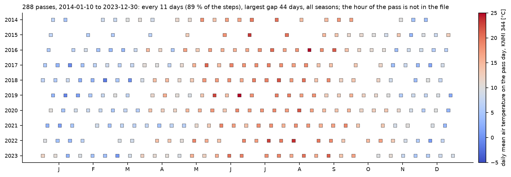
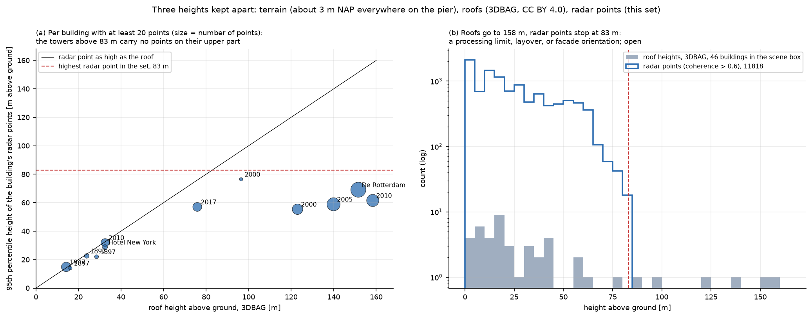

Data
Radar measurements of one Rotterdam district, the heights of its buildings, and the balloon, station and tower measurements we compare them with.
Radar: two processings of Kop van Zuid
The radar satellite TerraSAR-X passes over Rotterdam every 11 days. From its images, thousands of fixed points on facades, roof edges and pavement are tracked over the years. We have two processings of the same district, Kop van Zuid, made at different times. They overlap for four years, which lets us check one against the other.
| Processing | Radar points | Passes | Period |
|---|---|---|---|
| Older | 20 594 | 288 | 10 January 2014 to 30 December 2023 |
| Newer | 22 118 | 213 | 2020 to 2026 |
| Shared | 752 points matched one to one | 122 | 8 January 2020 to 30 December 2023, identical dates |
Descending track, X band, incidence about 23 degrees. The older set was verified at 288 epochs with an 11-day step (largest gap 44 days); epoch 0 is exactly zero for every point, so all series are differences from 10 January 2014. The local hour of the pass is not in either file. Each processing refers its displacements to a reference point that is not in the file; see Reference. Of the older set, 11 818 points have coherence above 0.6. Its scatterers sit at a median of 14.7 m above ground with an interquartile span of 31.2 m and a ceiling of 83.2 m, although roofs in the scene reach 158 m. Kop van Zuid is a high-rise best case, not a city average.

Building heights
The method needs to know how high each radar point is, and where the ground is. Heights come from the public 3D building register 3DBAG, which is built from the national elevation model AHN. The pier is flat: the ground sits at about 3.2 m above Dutch sea level (NAP) everywhere.
Area: RD New box (92600, 435200) to (93450, 435950), 46 buildings. Two independent routes give the ground level: the radar product's own elevation model minus its geoid, median 3.20 m NAP with 0.18 m spread over 20 594 pixels, and 3DBAG's ground height, median 3.34 m NAP over 45 buildings. The 0.14 m agreement supports the inferred conversion to NAP and to height above ground. Height model: AHN5 (AHN6 does not yet cover Rotterdam). Roofs in the box reach 158 m; radar points stop at 83 m.

Balloon soundings
Two radiosonde stations frame the region: De Bilt in the Netherlands and Beauvechain in Belgium. Their archived records are the reference for what the air does, but they keep few readings close to the ground. That is why the team reconstructs the lowest 200 m separately; see Air near the ground.
Source: NOAA IGRA2. In 2025 the archive holds 453 De Bilt reports on 358 dates and 331 Beauvechain reports on 329 dates. A large fraction of archived records has no reported height, and most 50 m bins near the surface have a median of zero recorded levels per launch: a property of what the archive retains, not of the flight. In the archive used for the September analyses, the first De Bilt level sits at about 650 m above ground, so any De Bilt value for the lowest 83 m is an interpolation.
Weather stations, towers and a weather model
Ground stations give the temperature on each pass day, two towers give measured temperature at several heights, and a weather model fills in between.
- KNMI station 344, Rotterdam: daily air temperature, used as the stand-in for building temperature in the estimation tests.
- Brasschaat tower (ICOS, Belgium): temperature at ten levels from 0.1 to 32.8 m in 2025; the nearby check for Beauvechain.
- Cabauw tower (KNMI): temperature and humidity from 1.5 to 200 m; the check for De Bilt, for the 2025 months available (January to April, July and August).
- ICON-D2 weather model, through the Open-Meteo archive: the background the low-level reconstruction starts from.
What may appear on this site
This site is public. The radar point sets were given to us for the course and may not be passed on, so the rule is strict.
- Everything drawn from the radar data is a mean over at least 20 radar points (a grid cell, a building, a 10 m slab of a building, a height band, the scene), published together with the spread of the points behind it.
- No radar point, point position, point identifier or single point's time series appears here, in figures or in data files.
- Fully synthetic tests and figures may appear, marked as synthetic.
- Public inputs (soundings, weather, towers, buildings) may appear with their licence.
- The draft text of the paper does not appear until it is submitted.
The exporter in the team repository refuses anything else, and tools/check_data.py in the site repository checks every data file before publication.